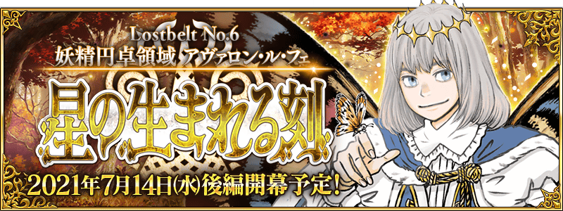

第2部 第6章「Lostbelt No.6 妖精圓卓領域 阿瓦隆・勒菲 星辰誕生之刻」(後篇)預定在2021年7月14日(三) 19:30公開！
由於開放條件為通過第2部 第6章「Lostbelt No.6 妖精圓卓領域 阿瓦隆・勒菲 星辰誕生之刻」(前篇)，請務必推進主線關卡等待續報！
◆公開預定時間◆
2021年7月14日(三) 19:30
◆開放條件◆
通過第2部 第6章「Lostbelt No.6 妖精圓卓領域 阿瓦隆・勒菲 星辰誕生之刻」(前篇)後開放。
※不需要通過亞種特異點(從Ⅰ到Ⅳ)。